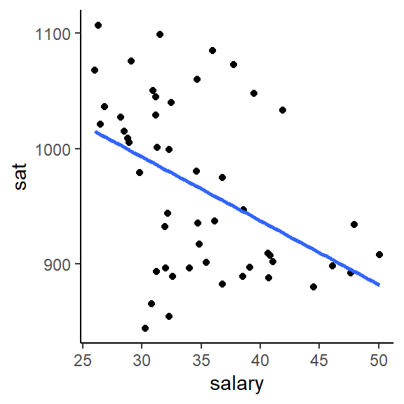
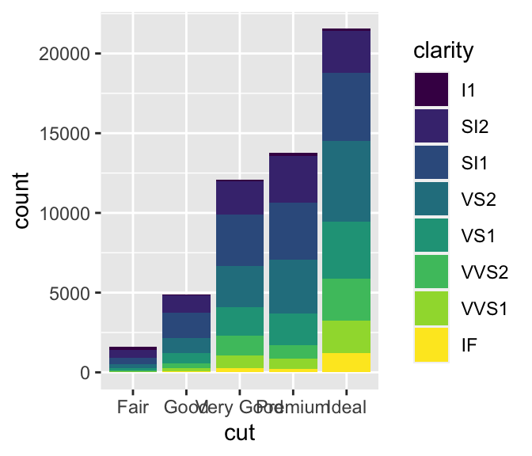
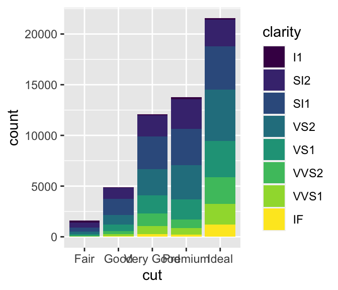

Topic 4 Multivariate Visualizations
Learning Goals
- Understand how we can use additional aesthetics such as color and size to incorporate a third (or more variables) to a bivariate plot
- Develop comfort with interpreting heat maps and star plots, which allow you to look for patterns in variation in many variables.
You can download a template .Rmd of this activity here.
Adding More Aesthetic Attributes
Exploring SAT Scores
Though far from a perfect assessment of academic preparedness, SAT scores have historically been used as one measurement of a state’s education system. The education data stored at https://www.macalester.edu/~ajohns24/data/sat.csv contain various education variables for each state:
education <- read.csv("https://www.macalester.edu/~ajohns24/data/sat.csv")| State | expend | ratio | salary | frac | verbal | math | sat | fracCat |
|---|---|---|---|---|---|---|---|---|
| Alabama | 4.405 | 17.2 | 31.144 | 8 | 491 | 538 | 1029 | (0,15] |
| Alaska | 8.963 | 17.6 | 47.951 | 47 | 445 | 489 | 934 | (45,100] |
| Arizona | 4.778 | 19.3 | 32.175 | 27 | 448 | 496 | 944 | (15,45] |
| Arkansas | 4.459 | 17.1 | 28.934 | 6 | 482 | 523 | 1005 | (0,15] |
| California | 4.992 | 24.0 | 41.078 | 45 | 417 | 485 | 902 | (15,45] |
| Colorado | 5.443 | 18.4 | 34.571 | 29 | 462 | 518 | 980 | (15,45] |
A codebook is provided by Danny Kaplan who also made these data accessible:

Figure 4.1: Codebook for SAT data. Source: https://www.macalester.edu/~kaplan/ISM/datasets/data-documentation.pdf
To examine the variability in average SAT scores from state to state, let’s start with a univariate density plot:
ggplot(education, aes(x = sat)) +
geom_density(fill = "blue", alpha = .5)
The first question we’d like to answer is to what degree do per pupil spending (expend) and teacher salary explain this variability? We can start by plotting each against sat, along with a best fit linear regression model:
ggplot(education, aes(y = sat, x = salary)) +
geom_point() +
geom_smooth(se = FALSE, method = "lm")
ggplot(education, aes(y = sat, x = expend)) +
geom_point() +
geom_smooth(se = FALSE, method = "lm") 

Exercise 4.1 Is there anything that surprises you in the above plots? What are the relationship trends?
Exercise 4.2 Make a single scatterplot visualization that demonstrates the relationship between sat, salary, and expend. Summarize the trivariate relationship between sat, salary, and expend.
Hints: 1. Try using the color or size aesthetics to incorporate the expenditure data. 2. Include some model smooths with geom_smooth() to help highlight the trends.
Exercise 4.3 The fracCat variable in the education data categorizes the fraction of the state’s students that take the SAT into low (below 15%), medium (15-45%), and high (at least 45%).
- Make a univariate visualization of the
fracCatvariable to better understand how many states fall into each category.
- Make a bivariate visualization that demonstrates the relationship between
fracCatandsat. What story does your graphic tell? - Make a trivariate visualization that demonstrates the relationship between
fracCat,sat, andexpend. IncorporatefracCatas the color of each point, and use a single call togeom_smoothto add three trendlines (one for eachfracCat). What story does your graphic tell?
- Putting all of this together, explain this example of Simpson’s Paradox. That is, why does it appear that SAT scores decrease as spending increases even though the opposite is true?
Other Multivariate Visualization Techniques
Heat maps
Note that each variable (column) is scaled to indicate states (rows) with high values (yellow) to low values (purple/blue). With this in mind you can scan across rows & across columns to visually assess which states & variables are related, respectively. You can also play with the color scheme. Type ?cm.colors in the console to see various options.
ed <- as.data.frame(education) # convert from tibble to data frame
# convert to a matrix with State names as the row names
row.names(ed) <- ed$State
ed <- ed[, 2:8]
ed_mat <- data.matrix(ed)
heatmap.2(ed_mat,
Rowv = NA, Colv = NA, scale = "column",
keysize = 0.7, density.info = "none",
col = hcl.colors(256), margins = c(10, 20),
colsep = c(1:7), rowsep = (1:50), sepwidth = c(0.05, 0.05),
sepcolor = "white", cexRow = 2, cexCol = 2, trace = "none",
dendrogram = "none"
)Exercise 4.4 What do you notice? What insight do you gain about the variation across U.S. states?
Heat map with row clusters
It can be tough to identify interesting patterns by visually comparing across rows and columns. Including dendrograms helps to identify interesting clusters.
heatmap.2(ed_mat,
Colv = NA, scale = "column", keysize = .7,
density.info = "none", col = hcl.colors(256),
margins = c(10, 20),
colsep = c(1:7), rowsep = (1:50), sepwidth = c(0.05, 0.05),
sepcolor = "white", cexRow = 2, cexCol = 2, trace = "none",
dendrogram = "row"
) ::: {.exercise #unnamed-chunk-149}
What do you notice? What new insight do you gain about the variation across U.S. states, now that states are grouped and ordered to represent similarity?
:::
::: {.exercise #unnamed-chunk-149}
What do you notice? What new insight do you gain about the variation across U.S. states, now that states are grouped and ordered to represent similarity?
:::
Heat map with column clusters
We can also construct a heat map which identifies interesting clusters of columns (variables).
heatmap.2(ed_mat,
Rowv = NA, scale = "column", keysize = .7,
density.info = "none", col = hcl.colors(256),
margins = c(10, 20),
colsep = c(1:7), rowsep = (1:50), sepwidth = c(0.05, 0.05),
sepcolor = "white", cexRow = 2, cexCol = 2, trace = "none",
dendrogram = "column"
)
Exercise 4.5 What do you notice? What new insight do you gain about the variation across U.S. states, now that variables are grouped and ordered to represent similarity?
Star plots
There’s more than one way to visualize multivariate patterns. Like heat maps, these star plot visualizations indicate the relative scale of each variable for each state. With this in mind, you can use the star maps to identify which state is the most “unusual.” You can also do a quick scan of the second image to try to cluster states. How does that clustering compare to the one generated in the heat map with row clusters above?
stars(ed_mat,
flip.labels = FALSE,
key.loc = c(15, 1.5), cex = 1.5
)
stars(ed_mat,
flip.labels = FALSE,
key.loc = c(15, 1.5), cex = 1.5, draw.segments = TRUE
)Exercise 4.6 What do you notice? What new insight do you gain about the variation across U.S. states with the star plots?